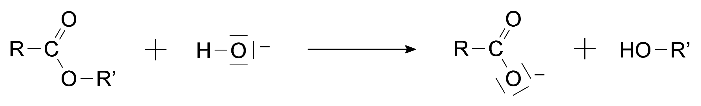
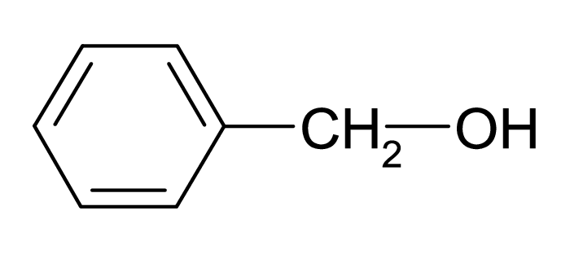
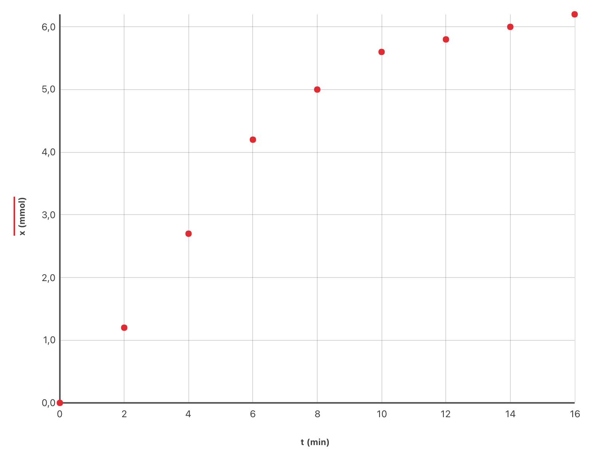

Lors d’une hydrolyse basique, le réactif utilisé est une solution aqueuse contenant des ions hydroxyde (solution d’hydroxyde de sodium par exemple). L’équation générale d’une réaction d’hydrolyse basique est la suivante :  L’ion carboxylate, contrairement à l’acide carboxylique formé lors de l’hydrolyse avec de l’eau, est sans effet sur l’alcool de sorte que la réaction inverse d’estérification n’a pas lieu.Une application de l’hydrolyse basique est l’obtention de savons. En effet, les réactions de saponification ne sont autres que des réactions d’hydrolyse basique à partir de corps gras qui sont des triesters de glycérol.
Les savons, obtenus par précipitation de l’ion carboxylate formé, sont des carboxylate de sodium ou de potassium. Ces derniers composés sont moins solubles dans l’eau salée que dans l’eau.
L’objectif de l’exercice est d’étudier les propriétés de ces différentes réactions. L’éthanoate de benzyle $\ce{CH_3-CO_2-CH_2-C_6H_5}$ est un ester très parfumé extrait du jasmin. On recueille un échantillon presque pur qu’on fractionne en deux parties égales.
Données
-
Formule semi-développée de l’alcool benzylique : 
-
Masse molaire de l’éthanoate de benzyle : $\pu{150 g⋅mol-1}$.
Hydrolyse d’un ester
La première moitié de l’échantillon précédent est introduite dans un ballon avec une quantité de matière égale d’eau et quelques gouttes d’acide sulfurique concentré. Ce ballon, équipé d’un chauffage à reflux, est placé au bain marie. La constante d’équilibre $K$ de la réaction d’hydrolyse qui se produit est égale à 0,25.
Étude de la réaction d’hydrolyse
- Écrire, en utilisant les formules semi-développées, l’équation de la réaction. Nommer les produits formés
Solution
$$\ce{CH_3-CO_2-CH_2-C_6H_5 (liq) + H_2O (liq) <=> CH_3-CO_2H (liq) + HO-CH_2-C_6H_5 (liq)}$$
- Donner deux caractéristiques de cette réaction.
Solution
La réaction d’hydrolyse est très lente et toute transformation chimique modélisée par cette réaction est non totale.
Étude du montage
- Schématiser le montage utilisé. Quel est l’intérêt de ce montage ?
Solution
Le montage est un chauffage à reflux. Il permet de chauffer le mélange réactionnel (facteur cinétique) sans avoir de perte de matière. La vitesse de la réaction est ainsi augmentée.
Document à bien connaître : Montages de chimie organique sur le Livre Scolaire
- Quel est le rôle de l’acide sulfurique ?
Solution
L’acide sulfurique est un catalyseur.
Étude quantitative
On note $n_0$ les quantités de matière initiales de réactifs et $x_f$ l’avancement de la réaction dans l’état final.
- Établir le tableau d’avancement de la transformation.
Solution
| État | Av. | Ester | Eau | Acide | Alcool | |
|---|---|---|---|---|---|---|
| Initial | 0 | $n_0$ | $n_0$ | 0 | 0 | |
| Intermédiaire | $x$ | $n_0-x$ | $n_0-x$ | $x$ | $x$ | |
| Final | $x_f$ | $n_0-x_f$ | $n_0-x_f$ | $x_f$ | $x_f$ |
- Définir le taux d’avancement $\tau$ de la réaction.
Solution
Le taux d’avancement final sert à comparer l’avancement final réel $x_f$ à l’avancement maximal $x_{\text{max}}$, c’est à dire à l’avancement de la transformation hypothétique totale modélisée par la même réaction : $$ \tau = \dfrac{x_f}{x_{\text{max}}} $$
- Donner l’expression de la constante d’équilibre $K$. Montrer que : $$ K = \dfrac{\tau^2}{\left(1 - \tau \right)^2} $$
Solution
$$ K = \dfrac{[\text{Acide}]\, [\text{Alcool}]}{[\text{Ester}]\, [\text{Eau}]} $$ On a donc aussi $$ K = \dfrac{x_f^2}{\left(n_0 - x_f \right)^2} $$ Comme $x_f = \tau \, x_{\text{max}}$ et $x_{\text{max}} = n_0$, $$ x_f = \tau \, n_0 $$ Finalement $$ K = \dfrac{\left(\tau \, n_0 \right)^2}{\left(n_0 - \tau \, n_0 \right)^2} \iff K = \dfrac{\tau^2}{\left(1 - \tau \right)^2} $$
- Vérifier que le rendement de la réaction est pratiquement égal à 33 %.
Solution
$\tau^2 = K\, (1 - \tau)^2 = K - 2 K\, \tau + K\, \tau^2$ donc $(1-K)\, \tau^2 + 2K\, \tau - K = 0$
A.N. $ \pu{0,75}\, \tau^2 + \pu{0,50}\, \tau - \pu{0,25} = 0 $. Il existe deux racines : $\pu{-1,0}$ et $\pu{0,33}$. La seule ayant un sens physique est 0,33.
- Comment évolue le rendement de la réaction lorsqu’on extrait l’alcool du milieu réactionnel ?
Solution
L’alcool est un produit de la réaction. Si on le retire, l’équilibre est déplacé dans le sens direct de la réaction chimique, donc le sens de consommation de l’ester.
Le rendement de la transformation augmente donc.
Hydrolyse basique d’un ester
On fait réagir la deuxième moitié de l’échantillon précédent avec une solution aqueuse d’hydroxyde de potassium en excès. Le volume $V$ du mélange réactionnel obtenu est égal à $\pu{200 mL}$. Par dosage de prélèvements successifs de $\pu{20,0 mL}$, on détermine la quantité de matière d’ions hydroxyde restants $n(\ce{HO-})$ restant à différentes dates ainsi que l’avancement $x$ de la réaction d’hydrolyse basique. Les résultats sont consignés dans le tableau ci-dessous :
| Date $t (\text{min})$ | 0 | 2 | 4 | 6 | 8 | 10 | 12 | 14 | 16 |
|---|---|---|---|---|---|---|---|---|---|
| $n(\ce{HO-})_{\text{restant}}$ $(10^{-3}\ \text{mol})$ | 10 | 8,8 | 7,3 | 5,8 | 5,0 | 4,4 | 4,2 | 4,0 | 3,8 |
| $x (10^{-3}\ \text{mol})$ | 0 | 1,2 | 5,0 | 5,6 | 5,8 | 6,0 | 6,2 |
- En exploitant le texte, donner l’intérêt d’une hydrolyse en milieu basique.
Solution
La réaction d’hydrolyse étudiée lors de la partie précédente conduit à un équilibre chimique car elle forme deux réactifs capables de réagir ensemble. Il existe donc en fait dans le milieu deux réactions inverses l’une de l’autre, ayant même vitesse.
Dans le cas d’une hydrolyse basique, on forme non pas un acide carboxylique mais sa base conjuguée, qui n’est pas capable de réagir avec l’alcool. Il n’existe qu’une seule réaction dans le milieu et la transformation chimique est totale.
Avancement de la réaction
- En s’aidant éventuellement d’un tableau d’avancement, écrire la relation entre $n(\ce{HO-})_{\text{restant}}$ et l’avancement $x$ de la réaction à la date $t$.
Solution
$n(\ce{HO-})_{\text{restant}} = n(\ce{HO-})_0 - x(t)$
- En déduire les valeurs manquantes de $x$ du tableau ci-dessus, aux dates $t = \pu{4 min}$ et $\pu{6 min}$.
Solution
À partir de la question précédente, on peut déterminer que $x(t) = n(\ce{HO-})_0 - n(\ce{HO-})_{\text{restant}}$.
- $x(\pu{4 min}) = \pu{10e-3 mol} - \pu{7,3e-3 mol} = \pu{2,7e-3 mol}$
- $x(\pu{4 min}) = \pu{10e-3 mol} - \pu{5,8e-3 mol} = \pu{4,2e-3 mol}$
- Sachant que la masse d’éthanoate de benzyle utilisée pour le mélange réactionnel de volume $V = \pu{200 mL}$, est égale à $\pu{10,0 g}$, déterminer la valeur finale de l’avancement, notée $x_f$.
Solution
Le mélange réactionnel de volume $V = \pu{200 mL}$ contient $\pu{10,0 g}$ d’éthanoate de benzyle, donc le prélèvement de $\pu{20,0 mL}$ n’en contient que $\pu{1,00 g}$.
L’énoncé indique que les ions hydroxyde ont été introduits en excès, ainsi l’éthanoate de benzyle est le réactif limitant. La transformation étant totale, il est totalement consommé :
$$
n_0 − x_f = 0 \iff x_f = n_0 = \dfrac{m}{M}
$$
A.N. $x_f = \dfrac{\pu{10,0 g}}{\pu{150 g⋅mol-1}} = \pu{6,67 mmol}$.
Étude de la cinétique de la réaction
- Définir et déterminer le temps de demi-réaction à partir du graphique ci-dessus.
Solution
Le temps de demi-réaction correspond à la durée au bout de laquelle l’avancement a atteint la moitié de sa valeur finale. Donc $$ x(t_{1/2}) = \dfrac{x_f}{2} = \dfrac{\pu{6,67 mmol}}{2} = \pu{3,33 mmol} $$ Donc $t_{1/2} = \pu{4,6 min}$.
- Écrire l’expression de la vitesse de formation de l’alcool en fonction de l’avancement de la réaction $x$.
Solution
$$ v_f = \dfrac{\mathrm{d}[\text{alcool}]}{\mathrm{dt}} = \dfrac{1}{V}\, \dfrac{\mathrm{d}x}{\mathrm{dt}} $$
- Comment varie la vitesse de formation de l’alccol au cours du temps ? Justifier la réponse ?
Solution
À partir de la question précédente, on peut conclure que la vitesse de formation de l’alcool à une date donnée est proportionnelle à la valeur du coefficient directeur de la tangente à cette date.
On constate sur le graphique que les valeurs des coefficients directeurs des tangentes à la courbe diminue au cours du temps, la vitesse de formation de l’alcool diminue donc aussi.
- Représenter sur le graphique l’allure de la courbe que l’on obtiendrait en chauffant le mélange réactionnel.